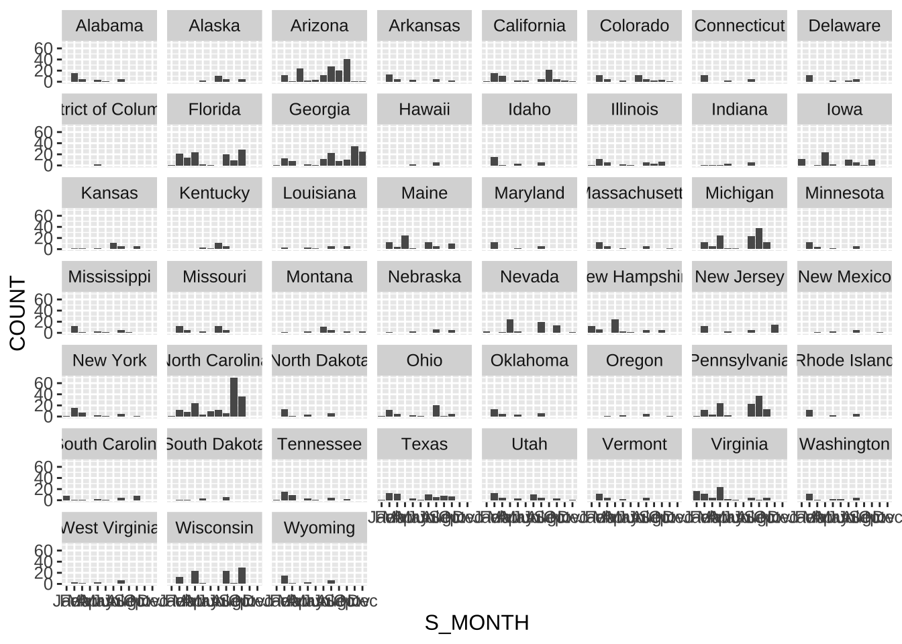
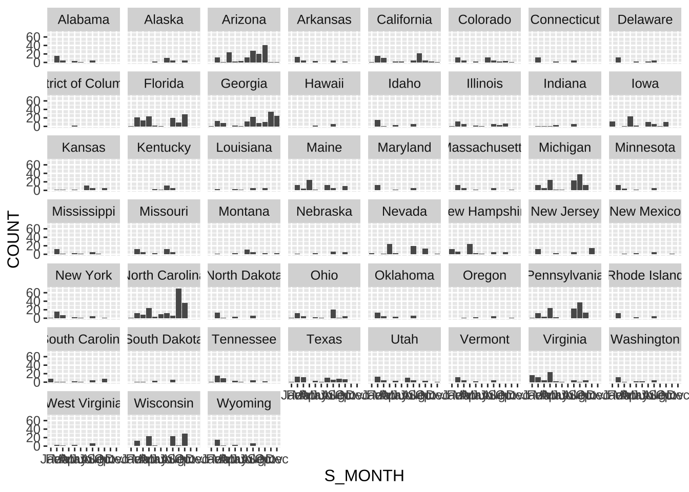
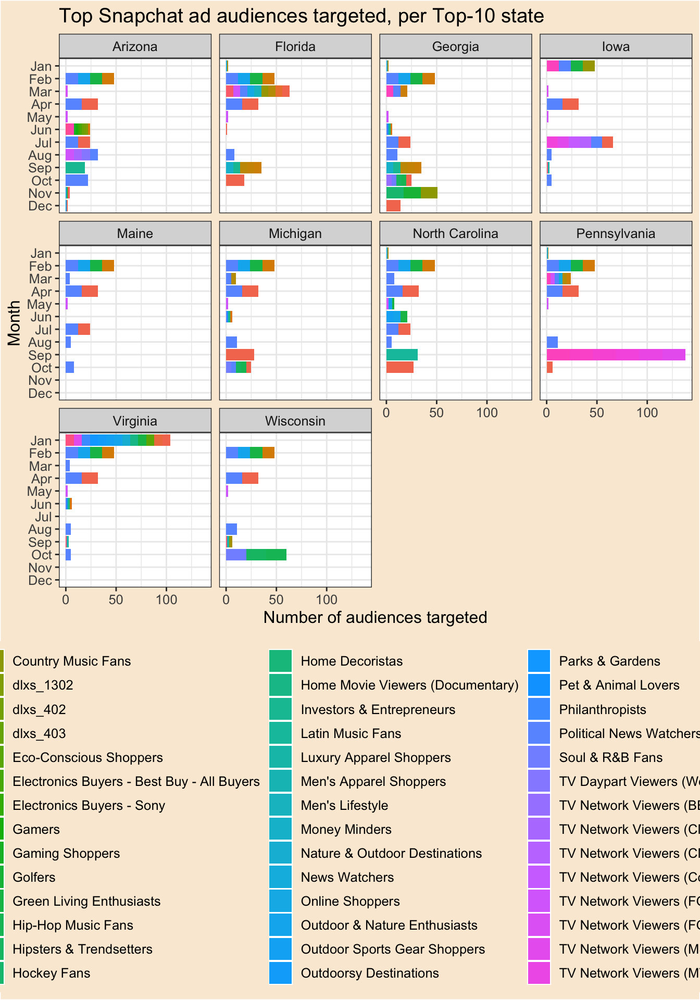
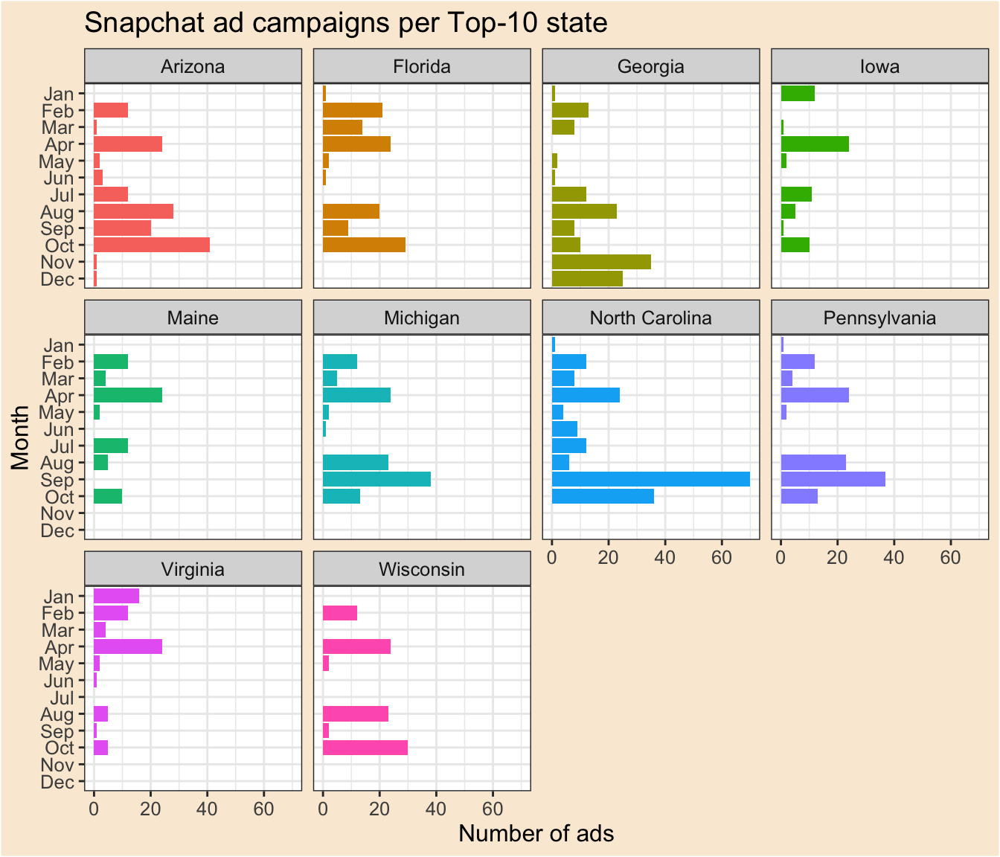
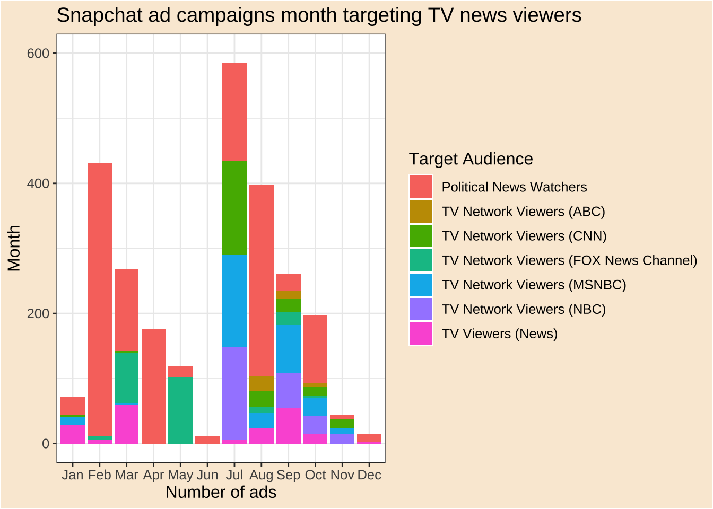
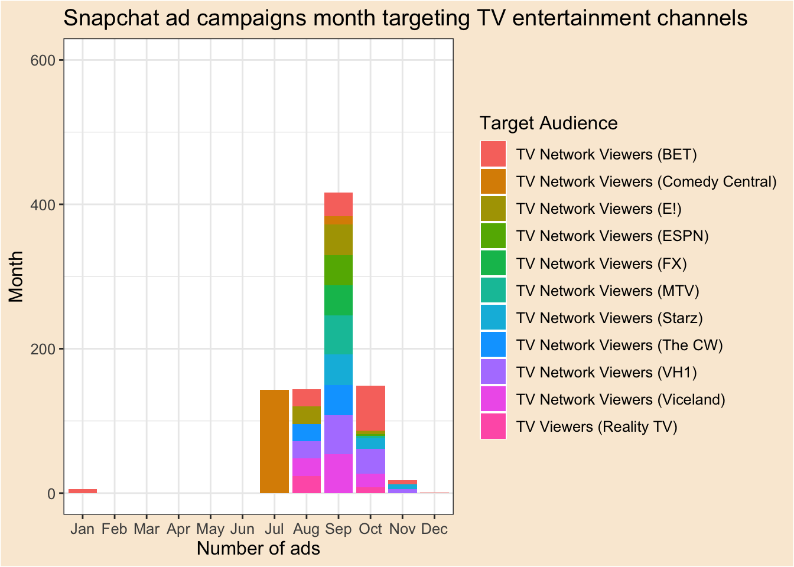

![]()
sm_count |>
ggplot(aes(S_MONTH, COUNT))+
geom_col()+
theme(text = element_text(size = 12))+
facet_wrap(~STATE_INC)
This project works with data from Snap’s Political Ads Library. Specifically, it pulls in the political advertising campaigns from 2020. This year was chosen because of the U.S. presidential election which occurred in November. In this analysis, I restrict the analysis to only U.S.-based advertisements which targeted particular states. The goal is to hone in on particular patterns of targeting across both time and target audience.
library(tidyverse)
library(lubridate)
library(showtext)
font_add_google("Nunito Sans", "nunito")
showtext_auto()snap <- read_csv("data/snap_political_20.csv")To prepare the data, I restrict the country code to united states and drop entries which do not specify target audiences (Interests) and do not target states specifically (Regions (Included)). I then split and unnest the states targeted, convert the starting date to a lubridate month, and split and unnest the interests targeted.
snap |>
filter(
CountryCode == "united states",
!is.na(Interests),
!is.na(`Regions (Included)`)
) |>
mutate(
STATE_INC = str_split(`Regions (Included)`, ",")
) |>
unnest(cols = STATE_INC) -> snap_states
snap_states |>
mutate(
S_MONTH = month(StartDate, label = TRUE, abbr = TRUE)) -> snap_sm
snap_sm |>
mutate(
TARGET = str_split(`Interests`, ",")
) |>
unnest(cols = TARGET) -> snap_unnestedI then summarise the date to count the number of campaigns per state per month which target a particular target audience. Each of these rows is given an id.
snap_unnested |>
summarise(
.by = c(STATE_INC,TARGET,S_MONTH),
TOTAL = n()) |>
mutate(
id = row_number()) -> snap_tidy
snap_tidy# A tibble: 2,065 × 5
STATE_INC TARGET S_MONTH TOTAL id
<chr> <chr> <ord> <int> <int>
1 California Advocates & Activists Sep 20 1
2 California Bookworms & Avid Readers Sep 20 2
3 California Collegiates Sep 20 3
4 California Investors & Entrepreneurs Sep 20 4
5 California Money Minders Sep 20 5
6 California News Watchers Sep 20 6
7 California Philanthropists Sep 20 7
8 California TV Network Viewers (CNN) Sep 20 8
9 California TV Network Viewers (FOX News Channel) Sep 20 9
10 California TV Network Viewers (MSNBC) Sep 20 10
# ℹ 2,055 more rowsWorking with the tidied dataset, however, can be misleading. Unnesting the states and interests can lead to an inflated counts of total ads. In the following summaries, I use only the unnested states data to count the number of campaigns in which a state was targeted. These counts are not mutually exclusive; that is, North Carolina and Arizona may both be included as in a single campaign’s targeting parameters. However, this summary still provides a useful yardstick to determine relative importance of states.
First, the count of a state’s inclusion in targeting parameters.
snap_sm |>
group_by(STATE_INC) |>
summarise(
COUNT = n()) |>
arrange(-COUNT) -> state_count
state_count# A tibble: 51 × 2
STATE_INC COUNT
<chr> <int>
1 North Carolina 182
2 Arizona 145
3 Georgia 138
4 Florida 121
5 Michigan 118
6 Pennsylvania 116
7 Wisconsin 93
8 Virginia 70
9 Maine 69
10 Iowa 66
# ℹ 41 more rowsSecond, the count of a state’s inclusion in targeting parameters, per month.
snap_sm |>
group_by(STATE_INC, S_MONTH)|>
summarise(
COUNT = n()) |>
arrange(-COUNT) -> sm_count
sm_count# A tibble: 297 × 3
# Groups: STATE_INC [51]
STATE_INC S_MONTH COUNT
<chr> <ord> <int>
1 North Carolina Sep 70
2 Arizona Oct 41
3 Michigan Sep 38
4 Pennsylvania Sep 37
5 North Carolina Oct 36
6 Georgia Nov 35
7 Wisconsin Oct 30
8 Florida Oct 29
9 Arizona Aug 28
10 Georgia Dec 25
# ℹ 287 more rows…and visualized (very roughly).
sm_count |>
ggplot(aes(S_MONTH, COUNT))+
geom_col()+
theme(text = element_text(size = 12))+
facet_wrap(~STATE_INC)
Turning back to the tidied data, which includes states and audiences unnested, the following shows the total count of audience interests targeted in a particular state, in a particular month. The volume and variety of targeting parameters are quite high:
snap_tidy |>
group_by(STATE_INC, S_MONTH) |>
summarise(TOTAL = sum(TOTAL)) |>
arrange(-TOTAL) -> sm_sum
sm_sum# A tibble: 297 × 3
# Groups: STATE_INC [51]
STATE_INC S_MONTH TOTAL
<chr> <ord> <int>
1 Arizona Oct 736
2 Pennsylvania Sep 434
3 Wisconsin Oct 386
4 Michigan Sep 380
5 Florida Mar 258
6 Florida Feb 237
7 Arizona Sep 231
8 North Carolina Oct 218
9 California Sep 204
10 Georgia Nov 159
# ℹ 287 more rowsBelow, I aggregate based on audience interest per month. We can see that “Political News Watchers”, “Green Living Enthusiasts”, “Bookworms & Avid Readers”, and “Outdoor & Nature Enthusiasts” were the most included this month:
snap_tidy |>
group_by(TARGET, S_MONTH) |>
summarise(
SUM = sum(TOTAL)) |>
arrange(-SUM) -> tm_sum
tm_sum# A tibble: 451 × 3
# Groups: TARGET [189]
TARGET S_MONTH SUM
<chr> <ord> <int>
1 Political News Watchers Feb 420
2 Green Living Enthusiasts Feb 414
3 Bookworms & Avid Readers Feb 408
4 Outdoor & Nature Enthusiasts Feb 408
5 Political News Watchers Aug 293
6 Advocates & Activists Apr 176
7 Political News Watchers Apr 176
8 Political News Watchers Jul 151
9 Advocates & Activists Jul 150
10 TV Network Viewers (CNN) Jul 143
# ℹ 441 more rowsAnd here, I aggregate based on audience interest per state. We can see that “Political News Watchers” and “Advocates & Activists” were the most-included in Arizona over the year.
snap_tidy |>
group_by(TARGET, STATE_INC) |>
summarise(
SUM = sum(TOTAL)) |>
arrange(-SUM) -> ts_sum
ts_sum# A tibble: 1,336 × 3
# Groups: TARGET [189]
TARGET STATE_INC SUM
<chr> <chr> <int>
1 Political News Watchers Arizona 71
2 Advocates & Activists Arizona 66
3 Political News Watchers Pennsylvania 63
4 Political News Watchers Michigan 61
5 Political News Watchers North Carolina 61
6 Political News Watchers Georgia 60
7 Advocates & Activists Michigan 59
8 Advocates & Activists North Carolina 57
9 Political News Watchers Maine 57
10 Advocates & Activists Georgia 55
# ℹ 1,326 more rowsFinally, I take the tidied data and cull the top interests per state per month to create the max_list and top_ads datasets; the former maintains a ‘tidy’ format, whereas the latter nests the top interests into a column of tables such that each state and month has a single row.
snap_tidy |>
slice_max(TOTAL, by = c(STATE_INC, S_MONTH)) -> max_list
max_list |>
group_by(STATE_INC, S_MONTH) |>
subset(select = c(STATE_INC, S_MONTH, TARGET)) |>
nest(.key = "TOP_TARGET") |>
arrange(S_MONTH, STATE_INC) -> top_snap
top_ads <- left_join(sm_count, top_snap)In the following chart, I attempt to plot the diversity of top ads per month per state. I restrict the output to the top 10 states (in terms of volume of campaign targeting inclusions) in an attempt to make the chart more readable. Because of the number of top audiences, the output ends up being less useful as a tool to determine top interests targeted per state and more useful to get a sense of which states had the highest volume and variety of interests targeted. For example, in September of 2020, Pennsylvania saw a huge volume of interests launch, though with relatively little diversity. By contrast, in January Virginia saw a slightly-smaller but still large volume of ads launch across a variety of interest parameters.
max_list |>
filter(STATE_INC == "North Carolina" | STATE_INC == "Arizona" | STATE_INC == "Georgia" | STATE_INC == "Florida" | STATE_INC == "Michigan" | STATE_INC == "Pennsylvania" | STATE_INC == "Wisconsin" | STATE_INC == "Virginia" | STATE_INC == "Maine" | STATE_INC == "Iowa") |>
ggplot(aes(TOTAL, S_MONTH, fill = TARGET))+
geom_col()+
labs(title = "Top Snapchat ad audiences targeted, per Top-10 state",x = "Number of audiences targeted",y = "Month")+
scale_y_discrete(limits = rev)+
facet_wrap(~STATE_INC)+
theme_bw()+
theme(rect = element_rect(fill = "antiquewhite"), legend.position="bottom", text = element_text(size = 12))
In the chart below, we can see the total number of campaigns launched in each of these top-10 states. Compare with the chart above. North Carolina, for example, saw many ads launch in September and October, but relatively few audiences were targeted. This indicates that a highly-specific demographic became very important to reach.
top_ads |>
filter(STATE_INC == "North Carolina" | STATE_INC == "Arizona" | STATE_INC == "Georgia" | STATE_INC == "Florida" | STATE_INC == "Michigan" | STATE_INC == "Pennsylvania" | STATE_INC == "Wisconsin" | STATE_INC == "Virginia" | STATE_INC == "Maine" | STATE_INC == "Iowa") |>
ggplot(aes(COUNT, S_MONTH, fill = STATE_INC))+
geom_col()+
labs(title = "Snapchat ad campaigns per Top-10 state",x = "Number of ads",y = "Month")+
scale_y_discrete(limits = rev)+
theme_bw()+
theme(
rect = element_rect(fill = "antiquewhite"),
legend.position="none",
text = element_text(size = 12))+
facet_wrap(~STATE_INC)
Below, I break out two categories of interest audiences. First, I show the total count of which target TV news viewers by month, colored by the specific targeting parameter.
tm_sum |>
filter(TARGET == "Political News Watchers" | TARGET == "TV Viewers (News)" | TARGET == "TV Network Viewers (CNN)" | TARGET == "TV Network Viewers (MSNBC)" | TARGET == "TV Network Viewers (NBC)" | TARGET == "TV Network Viewers (FOX News Channel)" | TARGET == "TV Network Viewers (ABC)") |>
ggplot(aes(S_MONTH, SUM, fill = TARGET))+
geom_col()+
scale_y_continuous(limits = c(0,600))+
labs(title = "Snapchat ad campaigns month targeting TV news viewers",x = "Number of ads",y = "Month", fill = "Target Audience")+
theme_bw()+
theme(rect = element_rect(fill = "antiquewhite"), text = element_text(size = 12))
Second, I show the total count of ads targeting non-news TV viewers by month, colored by targeting parameter.
tm_sum |>
filter(TARGET == "TV Network Viewers (BET)" | TARGET == "TV Network Viewers (VH1)" | TARGET == "TV Viewers (Reality TV)" | TARGET == "TV Network Viewers (The CW)" | TARGET == "TV Network Viewers (E!)" | TARGET == "TV Network Viewers (MTV)" | TARGET == "TV Network Viewers (Comedy Central)" | TARGET == "TV Network Viewers (Viceland)" | TARGET == "TV Network Viewers (Starz)" | TARGET == "TV Network Viewers (FX)" | TARGET == "TV Network Viewers (ESPN)") |>
ggplot(aes(S_MONTH, SUM, fill = TARGET))+
scale_x_discrete(drop=FALSE)+
scale_y_continuous(limits = c(0,600))+
geom_col()+
labs(title = "Snapchat ad campaigns month targeting TV entertainment channels",x = "Number of ads",y = "Month", fill = "Target Audience")+
theme_bw()+
theme(rect = element_rect(fill = "antiquewhite"), text = element_text(size = 12))
Comparing these charts, we see an interesting contrast. Whereas ads targeting audiences who may be more obviously politically engaged (news viewers) do appear in much higher volumes throughout the year, those targeting less-obviously engaged audiences (entertainment viewers) jump in the months immediately preceding the election in November. It’s also likely that these audiences are associated with the same campaigns and/or states. This appears to indicate the rise of more narrow audience targeting immediately prior to the election.
@online{saindon,
author = {Saindon, Jacob},
title = {Snap {Political} {Ads} {Analysis}},
url = {https://jacographer.com/},
langid = {en}
}